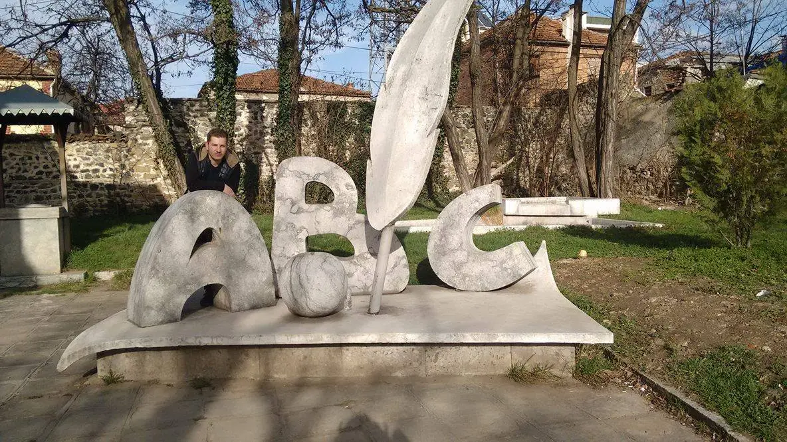

7 Marsi është një nga datat më të rëndësishme në historinë e arsimit shqiptar. Kjo ditë shënon hapjen e shkollës së parë shqipe në Korçë në vitin 1887. Ajo simbolizon përkushtimin ndaj dijes, gjuhës shqipe dhe edukimit të brezave të rinj. Në këtë ditë nderohen mësuesit për punën dhe sakrificën e tyre në formimin e shoqërisë.

7 Marsi është një datë shumë e rëndësishme për arsimin shqiptar, sepse më 7 mars 1887 u hap shkolla e parë shqipe në Korçë. Kjo shkollë u bë një hap i madh për përhapjen e gjuhës shqipe dhe për zhvillimin e arsimit në vend. Hapja e saj shënoi fillimin e një periudhe të re për kombin shqiptar, duke forcuar identitetin dhe kulturën kombëtare. Për këtë arsye, 7 Marsi festohet çdo vit si Dita e Mësuesit, për të nderuar punën dhe përkushtimin e mësuesve.